1. Introduction
Welcome back to the FCNN series!
In this new post, we are going to use the Python visualization class, visFCNN(), developed in the two previous posts.
We want to see what happens inside a feed-forward neural network, which has been trained on toy examples with Tensorflow with the previously-developed Python class, trainFCNN(), for a regression problem.
The Python class, visFCNN(), takes as input a dictionary containing all the information required to visualize the network flow, namely the values of the network parameters and main nodes (inputs, linear outputs and activation outputs).
This flow corresponds to a single sample extracted from the dataset.
We are going through the following steps:
- Get some insights into a regression problem.
- See the impact of the activation function.
- Visualize different layouts, i.e., different network depths with layers of different dimensions.
The source code can be found in my Github repo.
2. Regression
Let’s explore the network in different scenarios.
We get started with a regression problem, prod, the product of two inputs.
tnn = trainFCNN(nb_pnt=2500, dataset='prod')
tnn.plotPoints(idx=0)
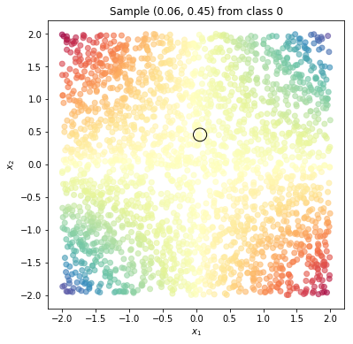
We then use the Tensorflow library to train a fully connected neural network.
We take three different cases to get the insight into the flow wrt the network size and the activation function.
We define the network with the dims attribute and the activation function with activation:
activation=relu,dims=[6]: small relu netactivation=relu,dims=[6, 6]: large relu netactivation=sigmoid,dims=[6]: small sigmoid net
The dims=[6, 6] case means two hidden layers with 6 and 6 neurons each.
Input and output dimensions are inferred from the dataset itself.
The training will be happening within the train method.
At the end of the training stage, we visualize the loss history to check whether it has reached convergence and the model outcome for the whole domain grid with plotModelEstimate.
3. Small relu net
3.1 Training and visualizing the network
We start with a small network, dims=[4], i.e., a single hidden layer with 4 neurons, whose activation function is relu.
We train for 250 epochs.
tnn.train(lib='tf', dims=[4], activation='relu', nb_epochs=250, lr=0.005)
The final model loss is 0.001387043041177094
plt.plot(tnn.lossHistory)
plt.title(tnn.mdlDescription());
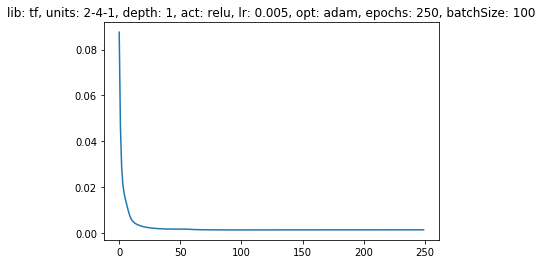
tnn.plotModelEstimate(figsize=(16, 9))
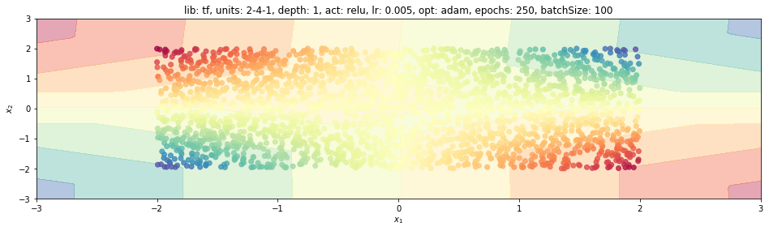
Amazing, so far so good!
Now we need to extract the network parameters and the values of each variable and store them in nn_prms and nn_vars, respectively.
We thus define the structure fcnn, a Python dictionary, containing all the information required to visualize the network flow.
We treat the input as the output of a fictitious previous activation layer.
The set of activation layers, $a^{(kk)}$, is retrieved from tnn.nn_vars[1::2], while the set of dense layers, $z^{(kk)}$, is retrieved from tnn.nn_vars[::2].
In a similar fashion, we extract weights and biases from tnn.nn_prms.
fcnn = {'activations': [tnn.XX] + tnn.nn_vars[1::2], 'linNeurons':tnn.nn_vars[::2],
'weights': tnn.nn_prms[::2], 'biases': tnn.nn_prms[1::2],}
We extract the 10-th sample (idx=10).
Here we create an instance of the class and call the visualize method with a tuple of figure size as an attribute.
The input coordinates are (0.37, -.21) and the outcome is -0.019, the product of the two inputs divided by 4.
Let’s have a look at the top-most neuron of the first dense layer, .81.
We get it as:
$$ .37\cdot (.8) + -.21\cdot (-.453) - 0.757 \approx -0.366 $$
Since the activation function is the ReLu function, whatever is negative becomes 0, otherwise does not change at all.
The output layer applies the identity function to the result of the scalar product:
$$ (0, 0.25, 0, 0.5) \cdot (-0.48, 0.95, -0.47, 0.83) = 0.25\cdot 0.95 + 0.5 \cdot 0.83 = -0.01 $$
to return the final prediction -0.01.
idx = 10
vnn = visFCNN()
vnn.visualize(fcnn, idx, (15, 12), palette='viridis', colNorm='comp')
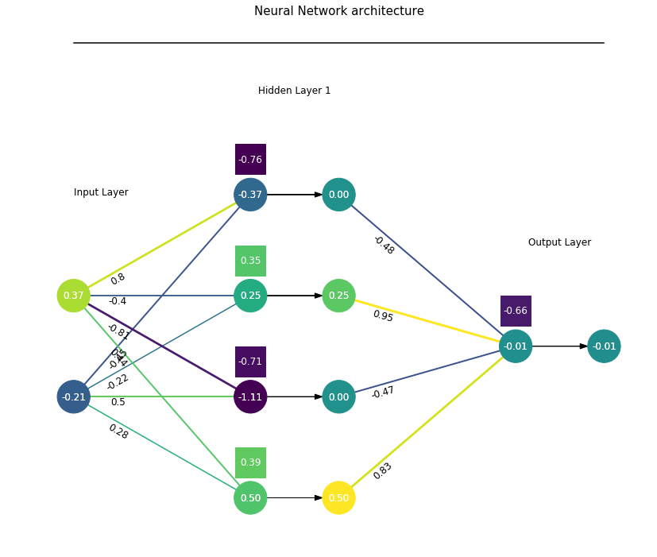
This network shows a really nice property, as we can see from the first layer weight matrix.
print('First layer weight matrix:\n{}'.format(W0))
First layer weight matrix:
[[ 0.2759463 0.49641293 -0.22344889 -0.45353654]
[ 0.44429868 -0.8133788 -0.40170252 0.79962885]]
plt.figure()
W0 = tnn.nn_prms[0]
plt.imshow(W0)
plt.axis('off');
If we take the left-most 2x2 matrix from W0, it is approximately opposite to the right-most 2x2 matrix.
Moreover, two bias values are there, repeated twice across the four neurons.
The first layer draws four lines in the $(x_1, x_2)$ space that we report here for the sake of readability. Lines are ordered and numbered from the bottom up so that line 1 is the bottom neuron and line 4 is the top one.
x1 = np.linspace(-2, 2, 10).reshape(-1, 1)
b0 = tnn.nn_prms[1]
x2 = - (x1*W0[0:1,:] + b0) / W0[1,:]
plt.figure()
plt.plot(x1, x2)
plt.xlim([-3, 3])
plt.xlabel('$x_1$')
plt.ylabel('$x_2$')
plt.grid()
plt.legend([1, 2, 3, 4], loc='right');
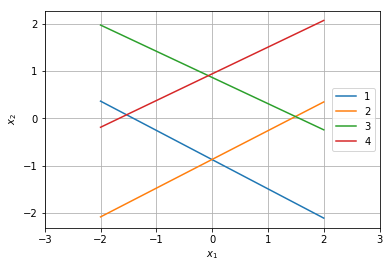
They form a diamond! Each line associated with a negative bias gives a null contribution (neuron is silent or dead) in the diamond area. To prove it, take one point in there, $(x_1, x_2) = (0, 0)$, and realize the bias is responsible for the overall sign. The Relu function returns 0 for a negative input!
Contrarily, a line corresponding to a positive bias returns the input itself.
The first layer has shown tremendous symmetric behaviour!
What about the second (and last) layer?
We basically have two weights, 0.9 and -0.45.
The former is associated with positive biases, lines 1 and 3, while the latter to negative biases, lines 2 and 4.
3.2 Central zone
How does the network approximate the product function in the diamond area? We know that neurons 1 and 2 are active on the RHS of lines 1 and 2, while neurons 3 and 4 on the LHS of lines 3 and 4.
So only first and third neurons are active in this area. We can extract the local behaviour of the network with the following four steps.
Let’s stack W0 and b0 vertically, which is a 3x4.
prm0 = np.vstack((W0, b0))
print('Output of first step:\n{}'.format(prm0))
Output of first step:
[[ 0.2759463 0.49641293 -0.22344889 -0.45353654]
[ 0.44429868 -0.8133788 -0.40170252 0.79962885]
[ 0.38886008 -0.70824724 0.34960958 -0.75686085]]
Element-wise product of W1 and a mask array for the given specific area. If neurons 1 and 4 are active only, the mask would be [1, 0, 0, 1].
W1 = tnn.nn_prms[2].T
mask = np.r_[1, 0, 1, 0]
step2 = W1 * np.r_[1, 0, 1, 0]
print('Output of second step:\n{}'.format(step2))
Output of second step:
[[ 0.82583565 -0. 0.94744754 -0. ]]
Matrix product of the first-layer parameter stack and the row array out of point 2.
step3 = prm0 * (W1 * np.r_[1, 0, 1, 0])
print('Output of third step:\n{}'.format(step3))
Output of third step:
[[ 0.22788628 -0. -0.2117061 0. ]
[ 0.36691769 0. -0.38059207 -0. ]
[ 0.32113451 0. 0.33123674 0. ]]
Sum it horizontally (axis=1) and add the final bias to the last element of the array only.
b1 = tnn.nn_prms[-1]
# input weights at the output layer
step4 = np.sum(step3, axis=1) + np.r_[0, 0, b1]
print('Output of last step:\n{}'.format(step4))
Output of last step:
[ 0.01618018 -0.01367438 -0.00330321]
It means that this area can be approximated as:
$$ y = (x_1\cdot x_2)/4 \approx 0.0162\cdot x_1 -0.0137\cdot x_2 -0.0033 $$
In other terms, it is pretty flat!
3.3 North-east zone
Let’s move to the north-east zone, on the RHS of the red and green lines and LHS of the yellow line.
It contains the point $(x_1, x_2) = (1, 1)$.
The first neuron is active only, therefore the mask is [1, 0, 0, 0].
We compact the previous four steps in one function with the mask attribute.
nnExp = lambda mask: np.sum(prm0 * (W1 * np.array(mask)), axis=1) + np.r_[0, 0, b1]
nnExpNE = nnExp([1, 0, 0, 0])
print('Output of the four steps for the North-East area:\n{}'.format(nnExpNE))
Output of the four steps for the North-East area:
[ 0.22788628 0.36691769 -0.33453995]
To understand the behaviour, we draw the line $ x_2 = x_{1}/2$ as $x_1$ varies from $.8$ to $2$. This linear function approximates the ground-truth trend quite well for $x_1$ greater than $1.25$.
xx1 = np.linspace(.8, 2, 10)
xx2 = xx1/2
yy = nnExpNE[0]*xx1 + nnExpNE[1]*xx2 + nnExpNE[-1]
ygt = (xx1*xx2)/4
plt.figure()
plt.plot(xx1, yy)
plt.plot(xx1, ygt)
plt.xlim([.5, 2.5])
plt.xlabel('$x_1$')
plt.ylabel('$y$')
plt.grid()
plt.legend(['NN linear function', 'Ground-truth']);
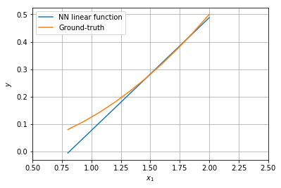
3.4 North-west zone
Let’s move to the north-west zone, on the LHS of the red and green lines (4, 3) and RHS of the blue line (1).
It contains the point $(x_1, x_2) = (-1, 1)$.
All but the second neurons are active, therefore the mask is [1, 0, 1, 1].
We compact the previous four steps in one function with the mask attribute.
nnExpNW = nnExp([1, 0, 1, 1])
print('Output of the four steps for the North-East area:\n{}'.format(nnExpNW))
Output of the four steps for the North-East area:
[ 0.23262142 -0.39528124 0.35789349]
To understand the behaviour, we draw the line $ x_2 = x_{1}/2$ as $x_1$ varies from $-2$ to $-.8$. This linear function approximates the ground-truth trend quite well for $x_1$ less than $-1.25$.
xx1 = np.linspace(-2, -.8, 10)
xx2 = -xx1/2
yy = nnExpNW[0]*xx1 + nnExpNW[1]*xx2 + nnExpNW[-1]
ygt = (xx1*xx2)/4
plt.figure()
plt.plot(xx1, yy)
plt.plot(xx1, ygt)
plt.xlim([-2.5, -.5])
plt.xlabel('$x_1$')
plt.ylabel('$y$')
plt.grid()
plt.legend(['NN linear function', 'Ground-truth']);
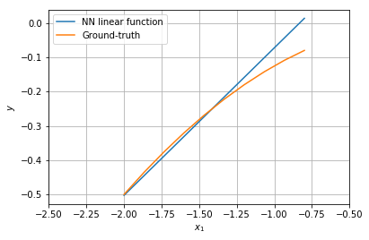
3.5 North zone
Let’s move to the north zone, on the LHS of the red line (4) and RHS of the green line (1).
It contains the point $(x_1, x_2) = (0, 2)$.
First and last neurons are active, therefore the mask is [1, 0, 0, 1].
We compact the previous four steps in one function with the mask attribute.
nnExpNO = nnExp([1, 0, 0, 1])
print('Output of the four steps for the North area:\n{}'.format(nnExpNO))
Output of the four steps for the North area:
[ 0.44432752 -0.01468917 0.02665675]
It means that this area can be approximated as:
$$ y = (x_1\cdot x_2)/4 \approx 0.444\cdot x_1 -0.0147\cdot x_2 + 0.0266 $$
In other terms, the output mainly depends on $x_1$, being it symmetric wrt the y-axis.
Let’s visualize the network again for a point from the north-east area, $(x_1, x_2) = (1, 1)$. Since the dataset is randomly generated, we need to look for the index of the closest point to $(1, 1)$.
eps = 0.05
idxs = (np.abs(tnn.XX[:,0]-1)<eps) & (np.abs(tnn.XX[:,1]-1)<eps)
idx = np.where(idxs)[0][0]
idx
1027
From the first hidden layer, the bottom-most neuron only survives. The following weight, combined with the final bias, gives the correct answer, $\frac{1\cdot 1}{4} \approx .25$. Nice!
vnn.visualize(fcnn, idx, (15, 12), palette='viridis', colNorm='comp')
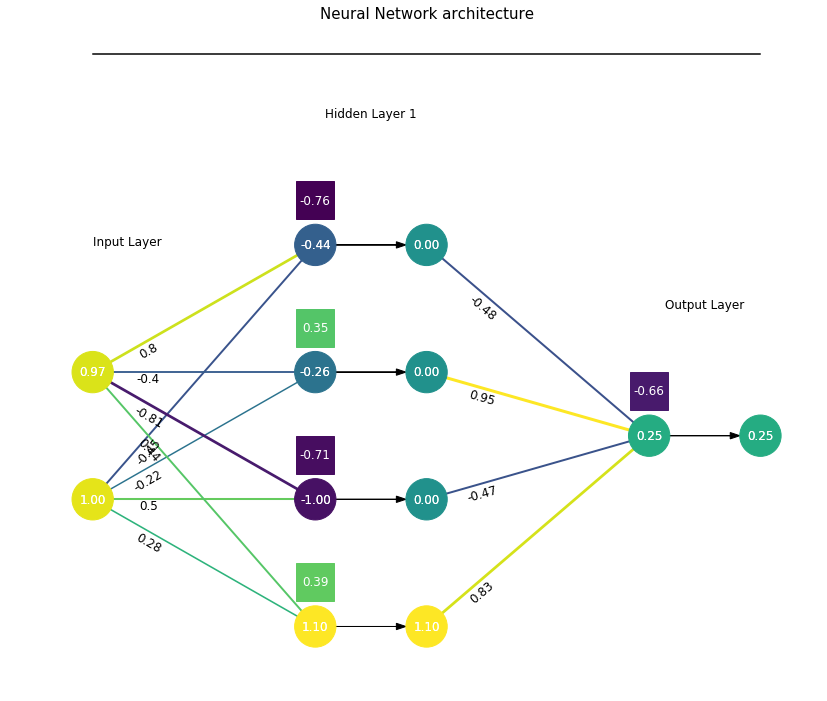
4. Large relu net
4.1 Training and visualizing the network
We train the large network with two hidden layers, five neurons each. As usual, we plot the loss history and the model output space.
tnn.train(lib='tf', dims=[5, 5], activation='relu', nb_epochs=250, lr=0.005)
The final model loss is 0.0003507580258883536
plt.plot(tnn.lossHistory)
plt.title(tnn.mdlDescription());
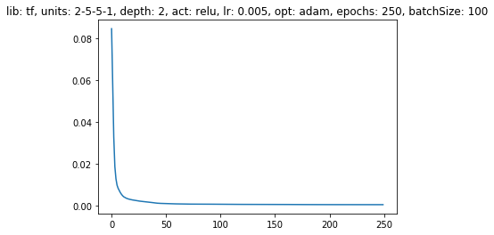
tnn.plotModelEstimate(figsize=(16, 9))
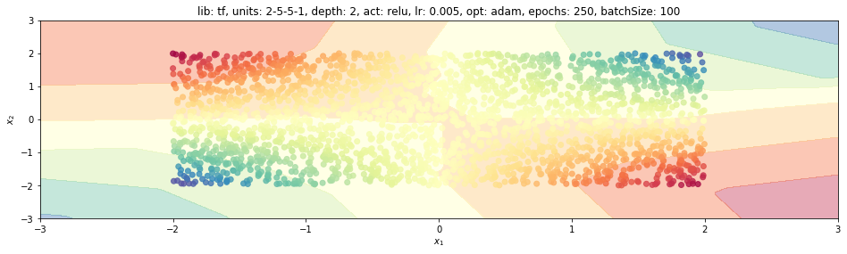
Good!
Now we update the Python dictionary fcnn with new parameters and values of the network variables.
fcnn = {'activations': [tnn.XX] + tnn.nn_vars[1::2], 'linNeurons':tnn.nn_vars[::2],
'weights': tnn.nn_prms[::2], 'biases': tnn.nn_prms[1::2],}
We extract four different samples, with the same code snippet used at the end of the previous section:
- sample
1027for $(x_1, x_2) = (1, 1)$, north-east - sample
2360for $(x_1, x_2) = (.5, 2)$, north - sample
2453for $(x_1, x_2) = (-1, 1)$, north-west - sample
1403for $(x_1, x_2) = (-1, -1)$, south-west
In general, the network is more complex and difficult to read and interpret. However, we could see how the final layer changes to different inputs.
Out of six weights, five are positive and in the range of $(.8, 1.2)$, while a single weight and the final bias are negative and close to $-.9$.
In the first case, three neurons are active, the top neuron is off and the bottom one is almost dead.
idx = 1027
vnn.visualize(fcnn, idx, (15, 15), palette='rainbow', colNorm='comp')
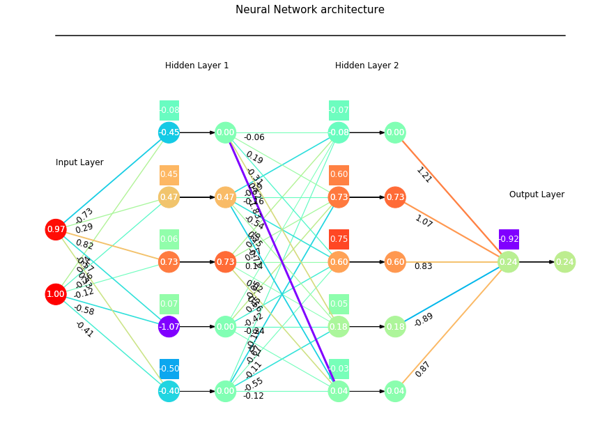
In the second case, the inputs’ signs don’t change and all but the top neuron are active.
idx = 2360
vnn.visualize(fcnn, idx, (15, 15), palette='rainbow', colNorm='comp')
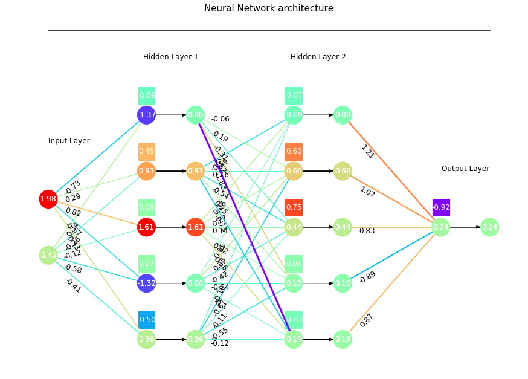
In the third case, the first input sign changes and three neurons are used to generate -0.26.
idx = 2453
vnn.visualize(fcnn, idx, (15, 15), palette='rainbow', colNorm='comp')
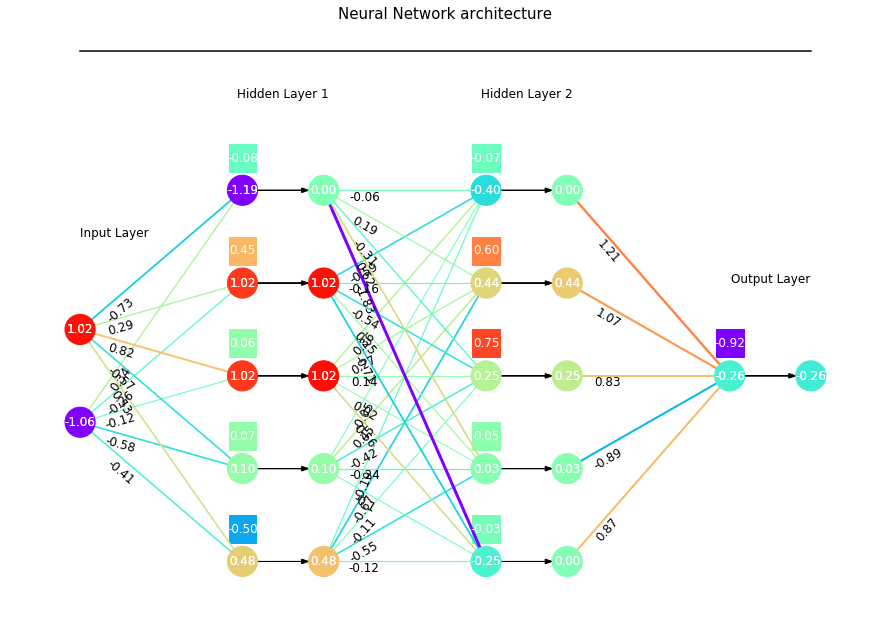
In the last case, south-west area, basically one neuron only is active.
idx = 1403
vnn.visualize(fcnn, idx, (15, 15), palette='rainbow', colNorm='comp')
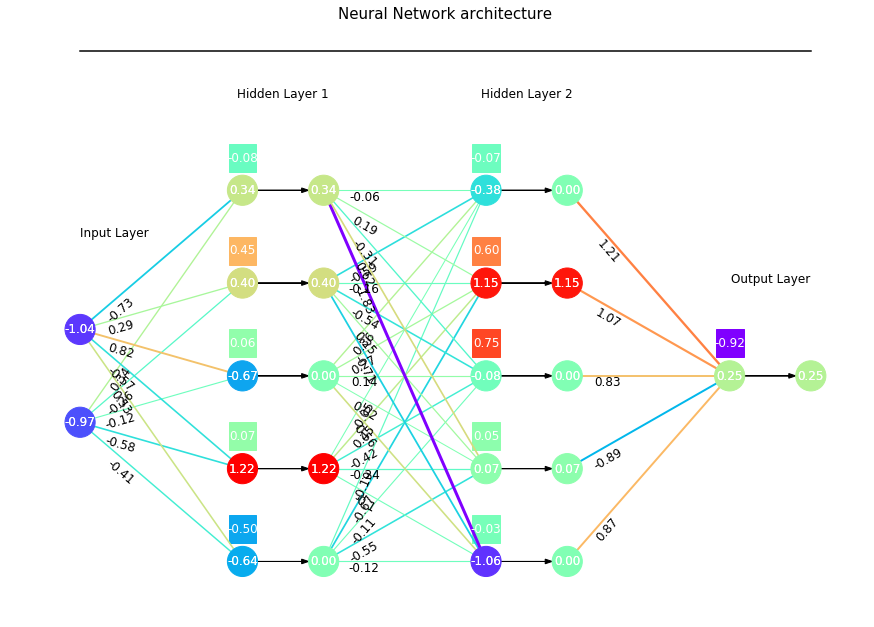
5. Small sigmoid net
5.1 Training and visualizing the network
We train the small network (one hidden layer with four neurons) with the sigmoid function. As usual, we plot the loss history and the model output space.
tnn.train(lib='tf', dims=[4], activation='sigmoid', nb_epochs=250, lr=0.001)
The final model loss is 0.00593841727823019
plt.plot(tnn.lossHistory)
plt.title(tnn.mdlDescription());
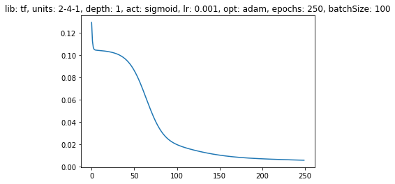
tnn.plotModelEstimate(figsize=(16, 9))
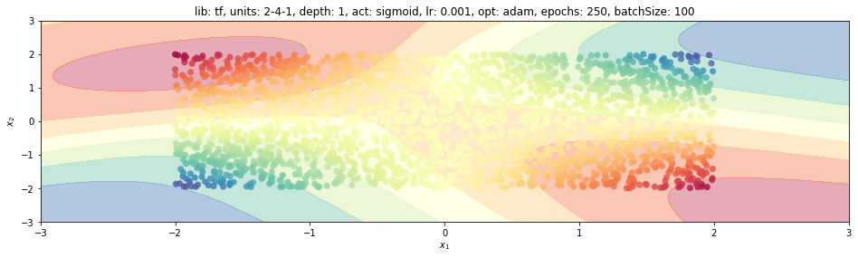
Now we refresh the fcnn dictionary again with new parameters and variables’ values.
fcnn = {'activations': [tnn.XX] + tnn.nn_vars[1::2], 'linNeurons':tnn.nn_vars[::2],
'weights': tnn.nn_prms[::2], 'biases': tnn.nn_prms[1::2],}
We extract two different samples, with the same code snippet used at the end of the previous section:
- sample
1027for $(x_1, x_2) = (1, 1)$, north-east - sample
1403for $(x_1, x_2) = (-1, -1)$, south-west
In general, the network shows higher values of biases and weights to compensate for the sigmoid function nature wrt those of the ReLu function. The former function, indeed, squeezes the input to the $(0, 1)$ range, so the parameters need to scale the output. Also, a neuron dies if its input is very negative.
We again analyze the final layer for different inputs.
Out of four weights, three are positive and in the range of $(.9, 1.4)$, while a single weight ($-2.1$) and the final bias ($-.34$) are negative.
idx = 1027
vnn.visualize(fcnn, idx, (10, 15), palette='cool', colNorm='comp')
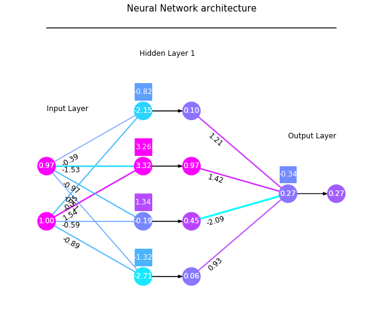
Moving from the north-east $(1, 1)$ point to the south-west $(-1, -1)$ point, we see how the second neuron value (from bottom) increases, while the other three neurons with positive weights somehow keep giving the same overall contribution. The third neuron decreases to counterbalance the first and last ones’ increment.
idx = 2453
vnn.visualize(fcnn, idx, (10, 15), palette='cool', colNorm='comp')
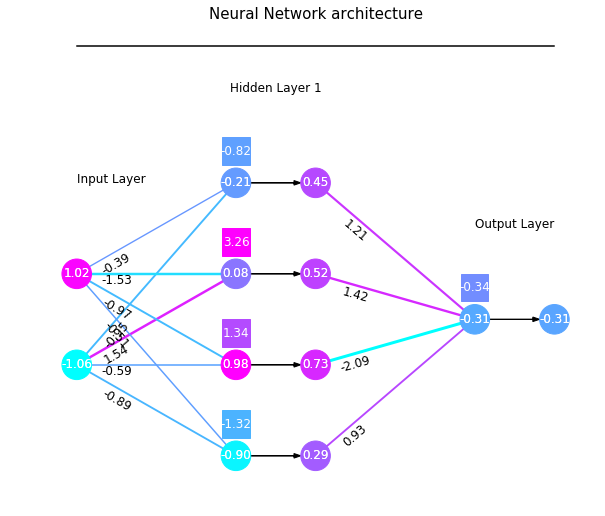